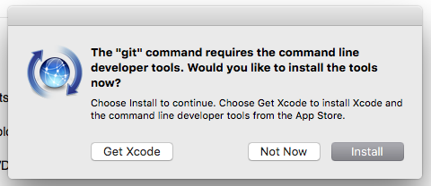

Perfect - thanks for your help and your patience. I should have spotted that myself. Time for some new spectacles!
Axoloti release 1.0.11
spinus
#52
I'm getting a problem somewhat similar to Lokki - on my mac (10.11.5), after upgrading to 1.0.11. Similar popup as described above, then:
Axoloti version : 1.0.11-0-gc534986 build time : 28/08/2016 23:11:40 UTC
Link to firmware CRC 50A29AA2
Current user library does not match correct version master -> 1.0.11
Stash (stash) FAILED : community (1.0.11,anon)
org.eclipse.jgit.api.errors.NoHeadException: HEAD required to stash local changes
org.eclipse.jgit.api.errors.NoHeadException: HEAD required to stash local changes
at org.eclipse.jgit.api.StashCreateCommand.getHead(StashCreateCommand.java:225)
at org.eclipse.jgit.api.StashCreateCommand.call(StashCreateCommand.java:242)
at axoloti.utils.AxoGitLibrary.createStash(AxoGitLibrary.java:247)
at axoloti.utils.AxoGitLibrary.upgrade(AxoGitLibrary.java:199)
at axoloti.MainFrame$2.run(MainFrame.java:285)
at java.awt.event.InvocationEvent.dispatch(InvocationEvent.java:311)
at java.awt.EventQueue.dispatchEventImpl(EventQueue.java:756)
at java.awt.EventQueue.access$500(EventQueue.java:97)
at java.awt.EventQueue$3.run(EventQueue.java:709)
at java.awt.EventQueue$3.run(EventQueue.java:703)
at java.security.AccessController.doPrivileged(Native Method)
at java.security.ProtectionDomain$JavaSecurityAccessImpl.doIntersectionPrivilege(ProtectionDomain.java:76)
at java.awt.EventQueue.dispatchEvent(EventQueue.java:726)
at java.awt.EventDispatchThread.pumpOneEventForFilters(EventDispatchThread.java:201)
at java.awt.EventDispatchThread.pumpEventsForFilter(EventDispatchThread.java:116)
at java.awt.EventDispatchThread.pumpEventsForHierarchy(EventDispatchThread.java:105)
at java.awt.EventDispatchThread.pumpEvents(EventDispatchThread.java:101)
at java.awt.EventDispatchThread.pumpEvents(EventDispatchThread.java:93)
at java.awt.EventDispatchThread.run(EventDispatchThread.java:82)
Current factory library does not match correct version, upgrading master -> 1.0.11
Stash (stash) FAILED : factory (1.0.11,anon)
org.eclipse.jgit.api.errors.NoHeadException: HEAD required to stash local changes
org.eclipse.jgit.api.errors.NoHeadException: HEAD required to stash local changes
at org.eclipse.jgit.api.StashCreateCommand.getHead(StashCreateCommand.java:225)
at org.eclipse.jgit.api.StashCreateCommand.call(StashCreateCommand.java:242)
at axoloti.utils.AxoGitLibrary.createStash(AxoGitLibrary.java:247)
at axoloti.utils.AxoGitLibrary.upgrade(AxoGitLibrary.java:199)
at axoloti.MainFrame$2.run(MainFrame.java:297)
at java.awt.event.InvocationEvent.dispatch(InvocationEvent.java:311)
at java.awt.EventQueue.dispatchEventImpl(EventQueue.java:756)
at java.awt.EventQueue.access$500(EventQueue.java:97)
at java.awt.EventQueue$3.run(EventQueue.java:709)
at java.awt.EventQueue$3.run(EventQueue.java:703)
at java.security.AccessController.doPrivileged(Native Method)
at java.security.ProtectionDomain$JavaSecurityAccessImpl.doIntersectionPrivilege(ProtectionDomain.java:76)
at java.awt.EventQueue.dispatchEvent(EventQueue.java:726)
at java.awt.EventDispatchThread.pumpOneEventForFilters(EventDispatchThread.java:201)
at java.awt.EventDispatchThread.pumpEventsForFilter(EventDispatchThread.java:116)
at java.awt.EventDispatchThread.pumpEventsForHierarchy(EventDispatchThread.java:105)
at java.awt.EventDispatchThread.pumpEvents(EventDispatchThread.java:101)
at java.awt.EventDispatchThread.pumpEvents(EventDispatchThread.java:93)
at java.awt.EventDispatchThread.run(EventDispatchThread.java:82)
Status: factory (1.0.11,anon) : OK ( master,dirty )
Changes for: factory (1.0.11,anon)
untracked: objects/math/half.axo
untracked: objects/disp/ibar 64.axo
(and so forth... the rest of the .axo/.axh/.h files)
Is this also a certificate issue?
Sputnki
#53
I had some issues with the firmware installation, not sure why: when flashing with the new firmware the leds did not stop blinking (i left the board connected for several minutes actually). I had to disconnect the cable and rescue the board with zadig.
The second flash went fine and now i have the correct firmware on the board. No errors were shown. I used the same cable and the same usb port in both occasions.
thetechnobear
#54
no its not a certificate issue...
it looks like you were going from 1.0.9?
but also then... you were on the master branch for factory, which is not correct for 1.0.9 either.
what version had you used before?
Im a bit confused why you were not at HEAD.
did you have outstanding changes in the community library?
had you changed any of the factory objects?
were you using a 'developer build version?'
IF so did you follow my instructions about removing sub-modules?
had you done any manual git operations?
can I see the earlier part of the console...
as I say, your setup looks like it was in a inconsistent state, to what I would expect axoloti to put you in....
I will say, I think i can make some changes so the upgrade process will use a bit more 'brute force' if users have an 'inconsistent state'.
(e.g. it looks like you don't have contribution details, so therefore I could have just trashed the community and factory folders, and re-downloaded them)
jaffasplaffa
#55
Just noticed that you can now drag and drop patches as well as subpatches to a patch.
Great 
thetechnobear
#62
1.0.11 is a production release.
please report issues in there own separate threads (helpdesk/software as appropriate),
we only used announcement thread for bugs for TEST releases, to avoid confusion with users not using the test release.
its easier for support/discussion to have separate threads rather than one huge thread with every issue.
(Ive moved several posts made here for this reason)
thetechnobear
#64
a gentle remind, can users please upgrade to 1.0.11.
(1.07 to 1.010 were test releases with the expectation users would upgrade asap, so we can drop support)
please also complete the poll on this thread to give us a better idea of take up, and also distribution across platforms.
spinus
#65
Sincere apologies @thetechnobear for zombifying this thread (as well as not answering your questions in a timely manner). This is a while back but I believe I had snagged a dev build of 1.0.9. I had not changed any factory objects and I did NOT follow the instructions to drop the sub-modules.
So maybe that's where the problem is?
How would I go about a fresh 1.0.11 install then? I seem to get the same message at connect after the upgrade.
thetechnobear
#66
well, Id would just download the release of 1.0.11
then rename ~/Documents/axoloti to ~/Documents/axoloti.old (or whatever)
then run axoloti...
this will then create you a fresh ~/Documents/axoloti, with prefs and also it will download the current factory and contribs library.
you can then copy anything you need from the ~/Documents/axoloti.old directory.
spinus
#67
Lovely. That worked great. Thank you!!!
By the way, is it the git commands from the axo app that prompts the Xcode install?

thetechnobear
#68
?
the application uses git directly, it doesnt use the command line version of git, so afaik it shouldn't request you to install anything.
when did you get this dialog appear?
(its not something I can test, since as a developer I always have this installed on all my machines)
thetechnobear
#70
You mean from the command line?
(Which would be completely expected , but is not required to use axoloti )
lokki
#71
hmm, i am not sure. i think it happened without invoking git from command line, but i might be wrong. i use git now for other things as well so i have it installed anyways...
spinus
#72
No, I get it first thing when starting Axoloti.app
I can just "Not Now" the dialogue and it runs great, but I can't figure out why this pops up.
I'm on 10.11.5.
thetechnobear
#73
no idea...
we don't use the 'git' command in the axoloti app, we use jgit which does not use the command line tools either... and as you have noticed, if you dont install it works - so its really unclear whats causing it.
(i did some quick searching on the net, and didnt find anyone else saying jgit was asking for dev tools to be installed)
unfortunately, as its not something i can test, its not something i can investigate, so will have to leave it to another developer to see if they can determine whats going on.
spinus
#74
Thank you. No sweat at all. Everything's working 100% after the reinstall. I was merely curious.